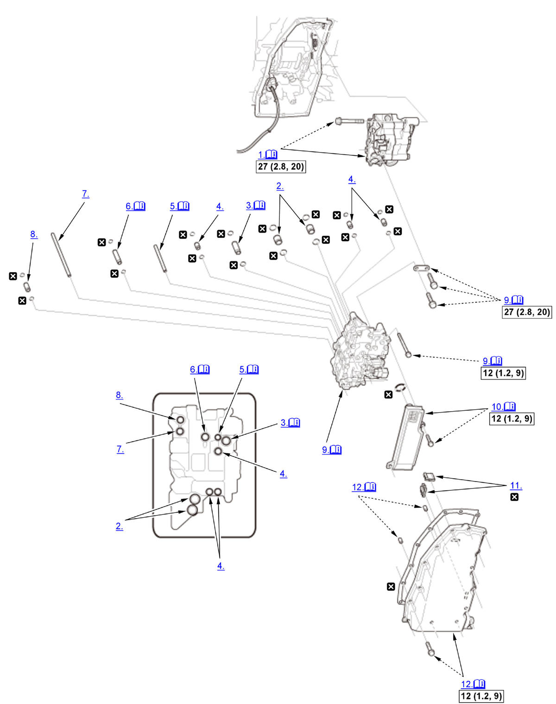

Transmission Fluid Pump Removal and Installation (L15B7/L15BA/L15BY (CVT)): Installation: Procedure
NOTE:
Numbered call-outs in figure pertain to list numbers in following procedure.
Fig 1: Exploded View Of Transmission Fluid Pump Components With Torque Specifications For Installation (L15B7/L15BA/L15BY - CVT)

Courtesy of HONDA, U.S.A., INC. |
Detailed information, notes and precautions |
 |
Torque: N.m (kgf.m, lbf.ft) |
 |
Replace |
- Transmission Fluid Pump - Install
NOTE:
- Apply transmission fluid to the transmission fluid pump shaft splines (A).
- Align the guide pin (B) of the transmission fluid pump with the guide hole (C) of the stator shaft flange.
- 18 x 18 mm Pipe - Install
- 14.3 x 36.2 mm Pipe - Install
NOTE: You can install the pipe regardless of its direction.
- 10.9 x 18.5 mm Pipe - Install
- Joint Pipe - Install
NOTE:
- The joint pipe has the filter (A). The filter end should face the valve body assembly side.
- Be careful not to drop the filter.
- 12 x 56.7 mm Pipe - Install
NOTE: You can install the pipe regardless of its direction.
- 8 x 133.5 mm Pipe - Install
- 10.9 x 26 mm Pipe - Install
- Valve Body Assembly - Install
1. Install the valve body assembly (A) straightly.
NOTE: Do not pinch solenoid wire harnesses A and B.2. Install the guide plate (G).
Bolt Length B 90 mm (3.54 in) C 80 mm (3.15 in) D 65 mm (2.56 in) E 55 mm (2.17 in) F 40 mm (1.57 in) 3. Make sure each branch of solenoid wire harness A goes through the appropriate location, especially as shown, one (B) must be located to the inside from the other (C). 4. Connect the connectors (D).
5. Install the transmission fluid temperature sensor (E).
- Transmission Fluid Strainer - Install
NOTE: Do not pinch solenoid wire harnesses A and B.
- Magnet - Install
- Transmission Fluid Pan - Install
NOTE:
- Tighten the transmission fluid pan mounting bolts in a crisscross pattern in at least two steps.
- Do not pinch solenoid wire harnesses A and B.
- Transmission Fluid - Refill
- Transmission Fluid Level - Check
- Engine Undercover Plate - Install
- TCM - Reset
(Only for Replacing Transmission Fluid Pump and/or Valve Body Assembly)
NOTE: This procedure is not required, if the TCM, and the transmission fluid pump and/or the valve body assembly are replaced simultaneously.